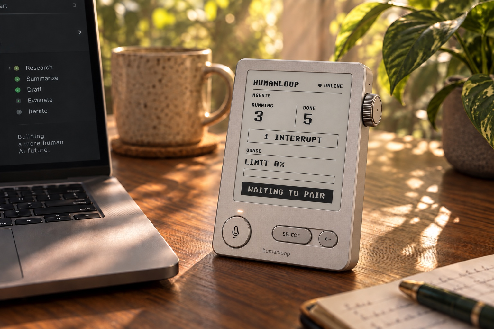
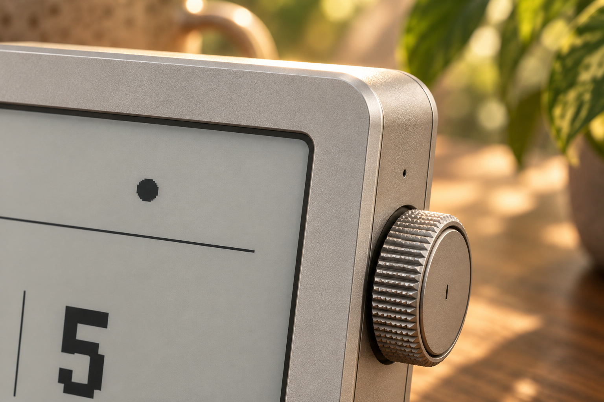

01 / See
Ambient, not attention-hungry
Running jobs, completed work, waiting decisions, and spend stay visible on e-paper without emitting light into the room.
A calm, physical checkpoint for autonomous work.

When an autonomous workflow hits a judgment call, it blocks inside a tab, terminal, or notification stream. Humanloop turns that interruption into a dedicated physical moment: visible, deliberate, and easy to resolve without opening another interface.
Running jobs, completed work, waiting decisions, and spend stay visible on e-paper without emitting light into the room.
Turn to move. Press to open. Hold to commit. The interaction is small enough to become muscle memory.
The microphone is electrically live only while the dedicated button is held. Listening state is both tactile and visible.
A single haptic tap marks a new interrupt—never an alarm.
E-paper shows what is running, done, and blocked.
The detented side dial maps one-to-one with the queue.
A deliberate hold confirms approvals and prevents slips.
Acknowledge haptic. Verdict returns upstream. Queue clears.
The process moves from a tightly framed interaction to measurable behavior, form, controls, engineering integration, and a repeatable manufacturing path.
Define the job narrowly: report and resolve. No logs, settings, account switching, or miniature desktop UI on the device.
Translate the promise into targets: approval in under 10 seconds, legibility near one meter, local feedback under 150 ms, and explicit offline state.
Mock HOME, QUEUE, ITEM, VOICE, SENT, and RESOLVED screens before hardware. Test every transition, tap/hold threshold, and failure state.
Study desk angle, one-handed reach, dial position, button travel, edge breaks, mass distribution, and the visual hierarchy of a quiet instrument.
Bench electronics, measure parts, then validate the antenna window inside a foil-lined resin body. Radio performance gates final enclosure geometry.
Use resin revisions to prove fit, travel, cable routing, and RF. Send only a fully assembled final resin revision to DFM and CNC.
Micro bead-blasted 6061 aluminum gives the device a warm, low-gloss tactility while controlling fingerprints and reflected light. A dark recessed bezel, crisp edge breaks, and a precisely knurled dial provide contrast without decorative trim.

“It should read as an instrument—something with one job, made properly.”
Always on, zero-power image hold, no screen glow, high ambient clarity.
Machined, knurled, detented, and weighted to make list movement feel exact.
Laser-etched legends; bores tolerance-compensated for anodize thickness.
Fewer visible seams, stronger haptic transmission, and the enclosure as heat sink.
Four deliberate screws, antenna window, wordmark, and room for custom branding.
Black or white—never gray.One-bit bitmap type avoids antialiasing artifacts and makes the display feel native to its medium.
Readable before it is beautiful.Large counts and stark hierarchy must scan in peripheral vision from across a desk.
Refresh with restraint.Frequent changes use partial refresh; full clears are reserved for screen changes and ghosting control.